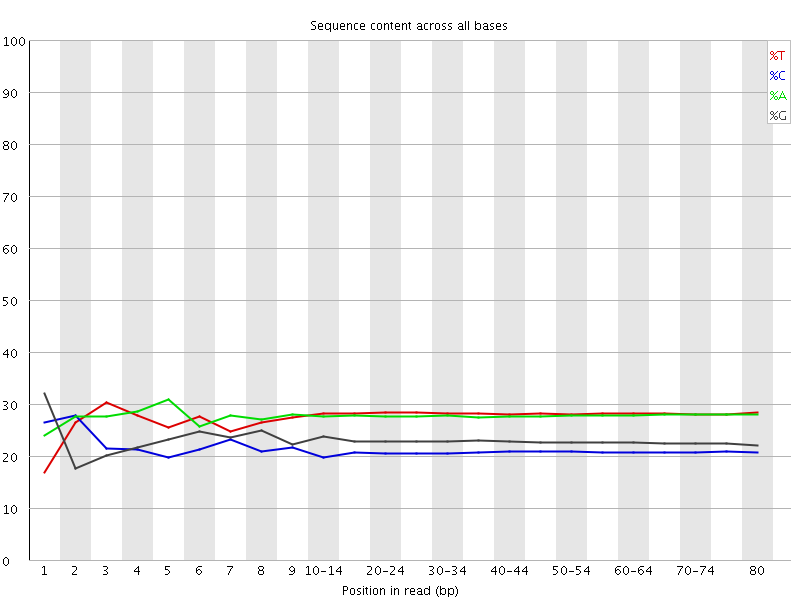

![[OK]](Icons/tick.png) Basic Statistics
Basic Statistics
| Measure | Value |
|---|---|
| Filename | RA030_R1.fq.gz |
| File type | Conventional base calls |
| Encoding | Sanger / Illumina 1.9 |
| Total Sequences | 10173282 |
| Filtered Sequences | 0 |
| Sequence length | 80 |
| %GC | 44 |
Per base sequence quality
Per sequence quality scores
![[WARN]](Icons/warning.png) Per base sequence content
Per base sequence content

![[FAIL]](Icons/error.png) Per base GC content
Per base GC content
Per sequence GC content
Per base N content

Sequence Length Distribution
Sequence Duplication Levels
Overrepresented sequences
| Sequence | Count | Percentage | Possible Source |
|---|---|---|---|
| GGGGGGGGGGGGGGGGGGGGGGGGGGGGGGGGGGGGGGGGGGGGGGGGGG | 132185 | 1.2993348655822181 | No Hit |
| AGGGGGGGGGGGGGGGGGGGGGGGGGGGGGGGGGGGGGGGGGGGGGGGGG | 10578 | 0.10397824418904342 | No Hit |
Kmer Content
| Sequence | Count | Obs/Exp Overall | Obs/Exp Max | Max Obs/Exp Position |
|---|---|---|---|---|
| GGGGG | 15823500 | 31.911808 | 39.697235 | 7 |
| CCCTC | 3862815 | 9.111525 | 12.753191 | 15-19 |
| CCTCA | 4548695 | 8.081313 | 46.480873 | 1 |
| CTCAG | 4781060 | 7.769057 | 42.75642 | 2 |
| TCAGC | 4518405 | 7.342252 | 41.603683 | 3 |
| CTGAG | 4851855 | 7.2110906 | 28.48293 | 9 |
| GAGGG | 4179060 | 6.9404287 | 10.78257 | 4 |
| GCTGA | 4652205 | 6.91436 | 28.184254 | 8 |
| TCCCT | 3770510 | 6.6584153 | 9.455876 | 15-19 |
| CAGCT | 3897805 | 6.333798 | 9.72051 | 4 |
| TGAGG | 4575800 | 6.22027 | 9.172878 | 3 |
| ATCCC | 3499000 | 6.2164 | 9.5924225 | 9 |
| AGCTG | 4153470 | 6.173114 | 7.2924533 | 40-44 |
| AGGGA | 4226290 | 5.7799735 | 9.022221 | 5 |
| GATCC | 3339915 | 5.427246 | 8.370499 | 8 |
| GGGAT | 3750265 | 5.0980506 | 7.350489 | 6 |
| GGATC | 3385905 | 5.032316 | 7.6740394 | 7 |
| AAAAA | 5113305 | 3.9052136 | 4.420344 | 75-76 |
| TTTTT | 5124665 | 3.797405 | 4.4439397 | 3 |
| CCCAG | 1289285 | 2.798398 | 5.254173 | 1 |
| CAGCC | 1206010 | 2.6176493 | 11.66878 | 3 |
| GCCTC | 1007810 | 2.1742768 | 5.284808 | 1 |
| GCCTG | 967485 | 1.9091036 | 5.2002587 | 1 |
| CAGCG | 920585 | 1.8275677 | 34.340893 | 4 |
| CGCTG | 887580 | 1.7514299 | 33.805714 | 7 |
| AGCGC | 851300 | 1.6900215 | 33.972115 | 5 |
| GCGCT | 839105 | 1.6557758 | 33.723217 | 6 |
| AGCCC | 715845 | 1.5537443 | 9.162203 | 4 |
| GCCCT | 670645 | 1.446868 | 8.562814 | 5 |
| AGGGG | 641645 | 1.0656204 | 6.2726274 | 1 |